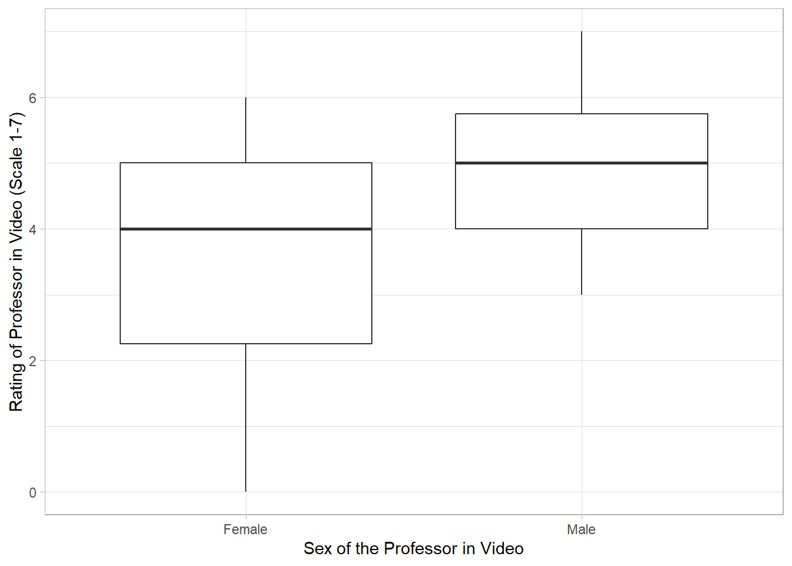
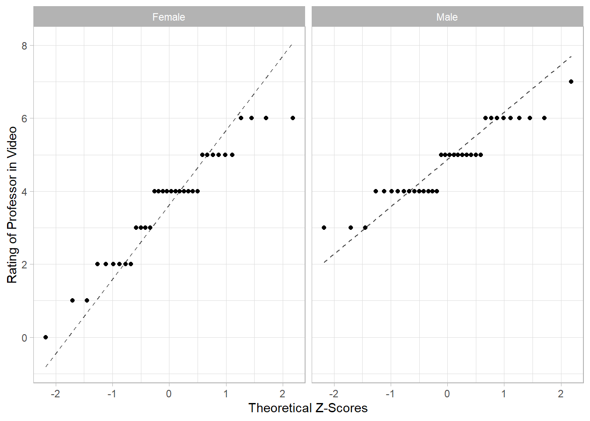

Lab 6: Hypothesis Testing - Two Independent Groups
Digital Accessibility
Please note that all images were created with modifications to the defaults to make them digitally accessible. If you recreate this code in another environment, your plots have different colors and backgrounds.
1 Getting Started
Be sure to load the packages ggformula and mosaic, using the library() function. Remember, you need to do this with each new Quarto document or R Session. Add the package names in each of the blanks below to load in the indicated packages.
library() loads in packages. You need to supply the package name you need to load inside the parentheses.
library(ggformula) #for graphs
library(mosaic) #for statistics
library(tidyverse) #for data management
library(ggformula) #for graphs
library(mosaic) #for statistics
library(tidyverse) #for data management
Revisit Lab 5 Primer
The examples used in the Lab 6 Primer are continuations from the Lab 5 Primer. We encourage you to go back and review your previous answers and code to help you with your lab.
2 Sex Bias in Professor Ratings
Sex bias stems from a perceived mismatch from an expected role or characteristics based on sex. Studies have shown that men and women have unconscious sex biases against women in traditionally male-dominated fields (such as the sciences) or characteristics (such as leadership qualities). These biases often cause equally qualified women to be seen as less likable or less qualified than the men. (These links are to descriptions of two well-known studies, but there are plenty of other good resources).
Researchers are interested if this sex bias exists in traditionally female-dominated jobs as well, such as teaching. Students are asked to watch a video of an animated classroom and rate the professor. Each student is randomly assigned to either of two animations; the videos are exactly the same except for the sex of the professor drawn. You have been asked to analyze the data for the researchers to determine if the female-identifying professor is rated more poorly, on a 1 to 7 scale (with 7 being the best), than the male-identifying professor.
Run the following code chunk to read in the data and view the variable names and first 6 rows of the data.
2.1 Identify the Parameters
Identify the study design of this study.
Be sure you are able to provide a full justification. This is review from the Lab 5 Primer.
Identify the parameter(s) that would be of interest based on the study design.
Identify the null hypothesis that would be of interest based on the study design.
The researchers want to determine if the female-identifying professor is rated more poorly, on a 1 to 7 scale (with 7 being the best), than the male-identifying professor.
Identify the alternative hypothesis that would be of interest based on the study design.
The researchers want to determine if the female-identifying professor is rated more poorly, on a 1 to 7 scale (with 7 being the best), than the male-identifying professor.
2.2 Exploratory Data Analysis
Recall from the Lab 5 Primer, we calculated the following summary statistics and data visualizations.
2.2.1 Summary Statistics
df_stats(Rating ~ Sex, data = bias) response Sex min Q1 median Q3 max mean sd n missing
1 Rating Female 0 2.25 4 5.00 6 3.647059 1.554706 34 0
2 Rating Male 3 4.00 5 5.75 7 4.764706 1.016793 34 02.2.2 Data Visualization
gf_boxplot(Rating ~ Sex, data = bias,
ylab = "Rating of Professor in Video (Scale 1-7)",
xlab = "Sex of the Professor in Video") 
2.2.3 QQ Plot
gf_qq(~Rating | Sex, data = bias,
xlab = "Theoretical Z-Scores",
ylab = "Rating of Professor in Video") |>
gf_qqline()
Based on the provided infromation, do we meet the necessary conditions to conduct inference (e.g. confidence inteval, hypothesis test)?
2.3 Calculating the Test Statistic and P-Value
We will practice code for both a “by-hand” calculation and using t.test() (which is what we will be using from in general).
For the “by-hand” calculation, we will need to split the dataset into two parts, one dataset for the male professor video ratings and one for the female professor video ratings.
We can use the function filter() to extract out specific rows associated with a specific variable value. Notice that we use double equal signs == to indicate equivalence with a particular value, and since our variable is a categorical (character), we put the value in quotes.
Calculate the summary statistics for each sample. Modify the code below to calculate the summary statistics for each group.
Here are the necessary summary statistics for the Female professor video Ratings. We will save them for later use. To get them to both save and print, we can add parentheses around each statement
Now repeat the process for the Male professor video Ratings.
(mean_m <- mean(~Rating, data = male))
(var_m <- var(~Rating, data = male))
(n_m <- length(male$Rating))
(mean_m <- mean(~Rating, data = male))
(var_m <- var(~Rating, data = male))
(n_m <- length(male$Rating))2.4 Calculating a t-Test Statistic and p-Value
Now that we have the necessary summary statistics saved, we can calculate both our test statistic (t) and our p-value. Recall the t-statistic for an independent two-sample test is
\[t_0 = \frac{\bar{x}_1 - \bar{x}_2}{\sqrt{\frac{s_1^2}{n_1} + \frac{s_2^2}{n_2}}}\]
Recall that we are looking at Female Ratings - Male Ratings. Fill in the blanks below using the saved object names (e.g. mean_f, var_m) from above.
(se <- sqrt(var_f/n_f + var_m/n_m))
(t <- (mean_f - mean_m)/se)
(se <- sqrt(var_f/n_f + var_m/n_m))
(t <- (mean_f - mean_m)/se)Now, calculate the p-value using the pt() function. Consider the direction of the alternative hypothesis.
pt(t, df = n_f - 1)
pt(t, df = n_f - 1)Now, let’s calculate the test statistic and p-value using the t.test() function. Consider the direction of the alternative hypothesis. Recall you have three choices for the alternative.
"two.sided"
"greater"
"less"
t.test(Rating ~ Sex, data = bias, mu = 0, alternative = "less")
t.test(Rating ~ Sex, data = bias, mu = 0, alternative = "less")2.4.1 Switching the Direction of the Difference
Ultimately, it is up to the researcher to choose the direction of the calculated difference. If we wanted to switch our difference and have Male Ratings - Female Ratings, we would have to tell R to change the ordering of our variable using the mutate() function, since R defaults to reading our groups alphabetically and in the t.test() code would default to Female Ratings - Male Ratings (since F comes before M).
Here is the code to reorder the variable levels so "Male" is read first:
Now, rerun the t.test() code, but using bias_reorder. What do you have to change to make the test equivalent?
t.test(Rating ~ Sex, data = bias_reorder, mu = 0, alternative = "greater")
t.test(Rating ~ Sex, data = bias_reorder, mu = 0, alternative = "greater")2.5 Interpreting and Evaluating the p-Value
Using the calculate p-value from the t.test() function to answer the following questions.
Reorder to provide the appropriate interpretation of the p-value.
Evaluate the strength of evidence against the null hypothesis, using a significance level of \(\alpha = 0.05\)
Full Evaluation of Strength of Evidence
Remember we have specific details to include in a full evaluation of the strength of evidence.
We have {very strong/strong/moderate/some/little} evidence against the null hypothesis (in favor of the alternative hypothesis) that {context of indicated hypothesis} (t = {xxx}, df = {xxx}, p-value = {xxx}).